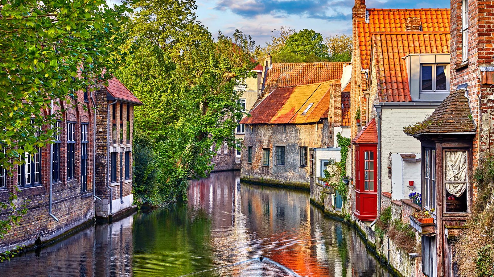

Germany
 annalindhfoundation.org ©
annalindhfoundation.org ©
Germany has been known to be the best place
in Europe to travel to for ages. It is a wonderful opportunity to relax
or to be adventurous. There will always be something for you for example the Berlin
Film Festival also known as The Berlinale. It is one of the biggest tourist attractions
in Germany right now. However, tourist that come for thrill seeking can always go up the
mountain for some snowboarding or skiing.
Read More
Belgium

expatica.com ©
It is no surprise that Belgium is famous for its architecture. The towns are
amazing and none of them are the same. If you don not want to admire the city you can also enjoy plenty of
specialties
in Belgium. They have delicious Belgium Waffles which you can put whip cream or strawberries on top. Also, there
is the national comfort food French
fries for when you want a quick snack and are on the go. Don not forget to ask for mayonnaise since it is freshly
made at the stores.
Read More